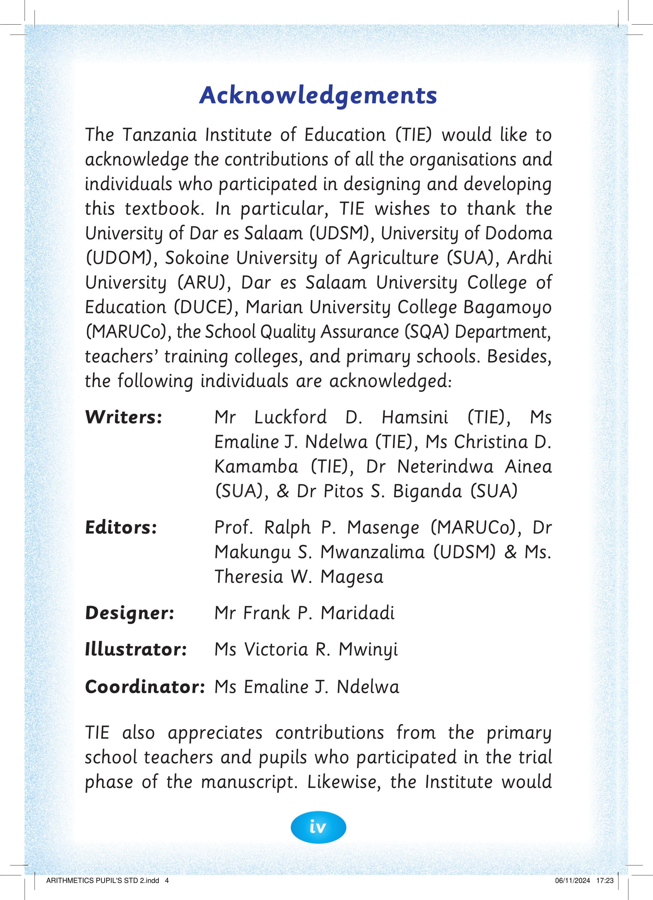

iv

Acknowledgements

The Tanzania Institute of Education (TIE) would like to

acknowledge the contributions of all the organisations and
individuals who participated in designing and developing
this textbook. In particular, TIE wishes to thank the
University of Dar es Salaam (UDSM), University of Dodoma
(UDOM), Sokoine University of Agriculture (SUA), Ardhi
University (ARU), Dar es Salaam University College of
Education (DUCE), Marian University College Bagamoyo
(MARUCo), the School Quality Assurance (SQA) Department,
teachers’ training colleges, and primary schools. Besides,
the following individuals are acknowledged:
Writers:
Mr Luckford D. Hamsini (TIE), Ms
Emaline J. Ndelwa (TIE), Ms Christina D.
Kamamba (TIE), Dr Neterindwa Ainea
(SUA), & Dr Pitos S. Biganda (SUA)
Editors:
Prof. Ralph P. Masenge (MARUCo), Dr
Makungu S. Mwanzalima (UDSM) & Ms.
Theresia W. Magesa
Designer:
Mr Frank P. Maridadi
Illustrator: Ms Victoria R. Mwinyi
Coordinator: Ms Emaline J. Ndelwa
TIE also appreciates contributions from the primary school teachers and pupils who participated in the trial phase of the manuscript. Likewise, the Institute would


ARITHMETICS PUPIL'S STD 2.indd 4
06/11/2024 17:23